직업상담사-2급 (2011-06-12 기출문제)
1과목: 직업상담학
1. 다음과 같은 상담과정의 목표를 제시한 상담이론은?
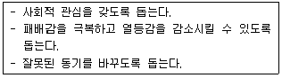
- 교류분석적 상담
- 개인주의 상담
- 실존주의 상담
- 형태주의 상담
(정답률: 74%)

2. 작업 동기를 설명하는 강화이론의 주장이 아닌 것은?
- 사람이 일을 하는 것은 보상이 뒤따르기 때문이다.
- 모든 사람에게 똑같이 보상을 할 때 작업 동기가 커진다.
- 보상이 지연되면 작업 동기가 줄어든다.
- 간헐적 보상을 주면 작업 동기가 유지된다.
(정답률: 84%)
3. 구직자 및 실직자에 대한 직업 상담의 기본 원리에 대한 설명으로 틀린 것은?
- 직업상담은 변화하는 직업세계에 대한 이해를 토대로 이루어져야 한다.
- 직업상담은 인간의 성격 특성과 재능에 대한 이해를 토대로 신뢰관계를 형성한 후 진행되어야 한다.
- 직업상담은 내담자의 현재 발달단계에 초점을 두고 상담이 이루어져야 한다.
- 가장 핵심적인 요소는 진로 혹은 직업의 결정이므로 개인의 의사결정과정에 대한 상담이 포함되어야 한다.
(정답률: 65%)
4. Williamson이 구분한 특성-요인 상담과정 중 ( A )에 대한 설명으로 옳은 것은?
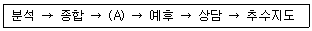
- 문제를 사실적으로 확인하고 원인을 발견한다.
- 상담에서 학습했던 것을 일상생활에서 적용할 때 이루어지는 행동을 강화, 재평가, 점검한다.
- 내담자의 다양한 측면들을 정리 재배열하여 전체적인 모습을 그려본다.
- 일반화된 방식으로 생활 전체를 다루는 것을 학습하는 단계이다.
(정답률: 73%)
5. 다음 상담장면에서 인지적 명확성이 부족한 내담자의 유형과 상담자의 개입방법이 옳은 것은?
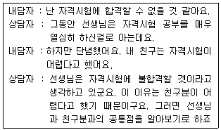
- 단순오정보 – 정보제공
- 구체성의 결여 - 구체화 시키기
- 자기인식의 부족 - 은유나 비유 쓰기
- 가정된 불가능 - 논리적 분석, 격려
(정답률: 77%)
6. 상담자에 대한 공감적 이해 과정에 관한 설명으로 틀린 것은?
- 공감적 이해를 위해서는 내담자의 입장에서 느끼고 생각해야 한다.
- 공감적 이해는 내담자의 자기 탐색과 수용을 촉진시킨다.
- 공감적 이해란 상담자가 내담자의 주관적인 경험의 세계에 자신을 맞춰나가는 것이다.
- 공감적 이해란 지금-여기에서의 내담자의 감정과 경험을 정확하게 이해하는 것이다.
(정답률: 72%)
7. 다음 상담장면은 진로상담의 어떤 편견에 해당하는가?
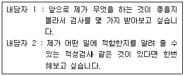
- 진로상담의 정확성에 대한 오해
- 일회성 결정에 대한 편견
- 적성 · 심리검사에 대한 과잉신뢰
- 흥미와 능력개념의 혼동
(정답률: 76%)
8. 포괄적 직업상담에서 내담자가 지닌 직업상의 문제를 가려내기 위해 실시하는 변별적인 진단검사와 가장 거리가 먼 것은?
- 직업성숙도 검사
- 직업적성검사
- 직업흥미검사
- 직업발달검사
(정답률: 55%)
9. 초기 면담의 주요 요소 중 내담자에게 선정된 행동을 연습하거나 실천토록 함으로써 내담자가 계약을 실행하는 기회를 최대로 도울 수 있는 요소는?
- 리허설
- 계약
- 감정이입
- 유머
(정답률: 89%)
10. 내담자중심 상담이론에 관한 설명으로 틀린 것은?
- Rogers의 상담경험에서 비롯된 이론이다.
- 상담의 기본목표는 개인이 일관된 자아개념을 가지고 자신의 기능을 최대로 발휘하는 사람이 되도록 도울 수 있는 환경을 제공하는 것이다.
- 특정 기법을 사용하기보다는 내담자와 상담자 간의 안전하고 허용적인 ‘나와 너’의 관계를 중시한다.
- 상담기법으로 적극적 경청, 감정의 반영, 명료화, 공감적 이해, 내담자 정보탐색, 조언, 설득, 가르치기 등이 이용된다.
(정답률: 72%)
11. 내담자의 흥미를 사정하는 목적과 가장 거리가 먼 것은?
- 여가선호와 직업선호 구별하기
- 자기인식 발전시키기
- 직업ㆍ교육상 불만족 원인 규명하기
- 여가대안 규명하기
(정답률: 64%)
12. 다음 중 의사결정의 촉진을 위한 “6개의 생각하는 모자(six thinking hats)" 기법의 모자 색상별 역할에 관한 설명으로 옳은 것은?
- 청색 - 낙관적이며, 모든 일이 잘 될 것이라고 생각한다.
- 백색 - 본인과 직업들에 대한 사실들만을 고려한다.
- 흑색 - 직관에 의존하고, 직감에 따라 행동한다.
- 황색 - 새로운 대안들을 찾으려 노력하고, 문제들을 다른 각도에서 바라본다.
(정답률: 71%)
13. 카운슬러 윤리강령을 기반으로 한 직업상담사의 기본윤리로 가장 적합한 것은?
- 상담자는 내담자가 이해하고 수용할 수 있는 한도 내에서 상담기법을 활용한다.
- 상담자는 내담자 개인이나 사회에 위험이 있다고 판단이 될지라도 개인의 정보를 보호해 줄 수 있는 포용력이 있어야 한다.
- 상담자는 내담자가 도움을 받지 못하는 상담임이 확인된 경우라도 초기 구조화한 대로 상담을 지속적으로 진행하여야 한다.
- 내담자에 대한 정보가 교육장면이나 연구장면에서 필요한 경우 내담자와 합의한 후 개인정보를 밝혀 활용하면 된다.
(정답률: 76%)
14. Ginzberg가 제시한 직업발달단계를 바르게 나열한 것은?
- 잠정기 → 환상기 → 현실기
- 환상기 → 잠정기 → 현실기
- 성장기 → 탐색기 → 확립기 → 유지기 → 은퇴기
- 성장기 → 확립기 → 탐색기 → 유지기 → 은퇴기
(정답률: 82%)
15. Crites는 흥미와 적성을 3가지 변인과 관련지어 포괄적 진단체계를 개발하였다. 다음 중 3가지 변인에 해당하지 않는 것은?
- 충족성
- 적응성
- 결정성
- 현실성
(정답률: 64%)
16. 다음의 내담자를 상담할 경우 가장 먼저 해야 할 것은?
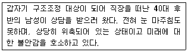
- 관계 형성
- 상담자의 전문성 소개
- 상담 구조 설명
- 과제 부여
(정답률: 88%)
17. Bordin의 정신 역동적 직업 상담에서 사용하는 기법이 아닌 것은?
- 명료화
- 비교
- 소망-방어 체계에 대한 해석
- 감정에 대한 준 지시적 반응 범주화
(정답률: 86%)
18. Butcher가 제시한 집단직업상담을 위한 3단계 모델에 해당하지 않는 것은?
- 탐색단계
- 전환단계
- 분석단계
- 행동단계
(정답률: 86%)
19. Ellis의 비합리적 신념 유형이 아닌 것은?
- 다른 사람에게 의지해야 하고 의지할 수 있는 누군가가 있어야 한다.
- 인간의 문제에는 완전한 해결책이 있다.
- 세상은 반드시 공평해야 하며 정의는 반드시 승리한다.
- 자신이 가치 있다고 인정받으려면 한 가지 영역에서만 완벽한 능력이 있고 성공하면 된다.
(정답률: 60%)
20. 다음에서 설명하고 있는 생애진로사정의 주요 부분은?
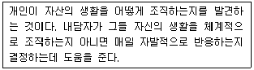
- 진로사정
- 전형적인 하루
- 강점과 장애
- 요약
(정답률: 85%)
2과목: 직업심리학
21. Ginzberg의 진로발달이론에서 현실기의 하위단계가 아닌 것은?
- 능력기
- 탐색기
- 정교화기
- 구체화기
(정답률: 63%)
22. 다음 중 A형 행동유형(Type A Behavior pattern)과 가장 거리가 먼 것은?
- 시간의 절박감과 경쟁적 성취욕이 강하다.
- 관상동맥성 심장병(CHD)에 걸릴 확률이 높다.
- 비경쟁적 상황에서는 타인과의 경쟁심이나 적대감이 의외로 없다.
- 직무스트레스의 주요 원천이다.
(정답률: 80%)
23. 다음 중 Parsons가 제시한 특성-요인 이론의 기본 가설이 아닌 것은?
- 인간은 신뢰롭고 타당하게 측정할 수 있는 독특한 특성을 지니고 있다.
- 직업은 그 직업에서의 성공을 위한 매우 구체적인 특성을 지닐 것을 요구한다.
- 진로선택은 다소 직접적인 인지과정이므로 개인의 특성과 직업의 특성을 짝짓는 것이 가능하다.
- 인성과 동일한 직업환경이 있으며, 각 환경은 각 개인과 연결되어 있는 성격유형에 의해 결정된다.
(정답률: 59%)
24. 검사 점수의 오차를 발생시키는 수검자 요인과 가장 거리가 먼 것은?
- 수행경험
- 수행불안
- 수행능력
- 수검당일의 생리적조건
(정답률: 65%)
25. 실업자의 직업전환에 대한 설명으로 틀린 것은?
- 실업자는 나이가 많을수록 취업제의를 받는 비율이 감소한다.
- 조직에서는 청년기, 중년기, 정년 전 등 직업경력의 전환점에서 적절한 훈련 내지 지도조언을 실시하는 경력개발계획을 추진할 필요가 있다.
- 직업상담에서 실업자에게 생애훈련적 사고를 갖도록 조언하고 촉구하고 참여하도록 권고하여야 한다.
- 직업전환은 어려운 일이기 때문에 한 직업에 계속해서 종사해야 한다.
(정답률: 83%)
26. A씨는 회사에 입사할 때 적성검사와 흥미검사를 실시하였다. 이후 A씨는 영업부에 배치되었고, 최근에 A씨의 영업실적이 평가되었다. A씨가 입사시 실시한 검사점수와 최근에 측정한 영업실적과의 상관계수를 통해 측정하려고 하는 것은 무엇인가?
- 동시타당도
- 예언타당도
- 구성타당도
- 수렴타당도
(정답률: 76%)
27. 70명의 새로 입사한 신입사원들에 대한 적성검사의 타당도 계수와 0.40이었다. 만일, 입사하지 못한 사람들도 포함한 모든 응시자를 대상으로 하면, 검사의 타당도 계수는?
- 높아진다.
- 낮아진다.
- 거의 같다.
- 변하지만 그 방향은 예측할 수 없다.
(정답률: 67%)
28. 경력개발을 위한 교육훈련을 실시할 때 가장 먼저 고려해야 하는 사항은?
- 사용 가능한 훈련방법에는 어떤 것들이 있는지에 대한 고찰
- 현 시점에서 어떤 훈련이 필요한지에 대한 요구분석
- 훈련프로그램의 효과가 어떻게 나타났는지를 평가하기 위한 평가계획 수립
- 훈련방법에 따른 구체적인 훈련프로그램 개발
(정답률: 77%)
29. 다음 사례에서 A씨가 해당하는 Holland의 직업성격유형은?
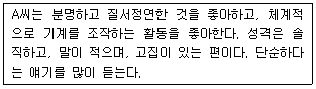
- 탐구적(investigative)
- 진취적(enterprising)
- 현실적(realistic)
- 관습적(conventional)
(정답률: 75%)
30. 다음 설명은 어떤 학자의 진로지도 및 선택이론에 해당되는가?
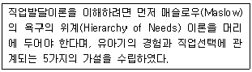
- 로(Roe)
- 수퍼(Super)
- 홀랜드(Holland)
- 터크맨(Tuckman)
(정답률: 79%)
31. 다음 중 Super의 진로발달이론에 대한 설명으로 틀린 것은?
- Ginzberg의 진로발달이론에 대한 비판에서 출발된 이론이다.
- 지나치게 대인관계 지향적이며, 정의적 측면을 강조한다는 비판을 받고 있다.
- 진로성숙은 생애단계 내에서 성공적으로 수행된 발달과업을 통해 획득된다.
- 직업발달은 성장기→탐색기→확립기→유지기→쇠퇴기의 순환과 재순환 단계를 거친다.
(정답률: 66%)
32. 지능검사 점수와 학교에서의 성적간의 상관계수가 0.30일때 이에 대한 설명으로 옳은 것은?
- 지능검사를 받은 학생들 중 30%가 높은 학교성적을 받을 것이다.
- 지능검사를 받은 학생들 중 9%가 높은 학교성적을 받을 것이다.
- 학교에서의 성적에 관한 변량의 9%가 지능검사에 의해 설명될 것이다.
- 학교에서의 성적에 관한 변량의 30%가 지능검사에 의해 설명될 것이다.
(정답률: 61%)
33. 다음은 진로발달에 관한 어떤 이론의 주장인가?
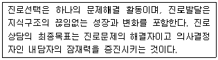
- 사회인지적 진로이론
- 인지적 정보처리적 진로이론
- 가치중심적 진로이론
- 자기효능감 중심의 진로이론
(정답률: 64%)
34. 조직감축으로부터 살아남은 종업원들이 전형적으로 조직에 대해 반응하는 행동이 아닌 것은?
- 살아남은 자들도 종종 조직에 대한 신뢰감을 상실하고는 한다.
- 더 많은 일을 해야 하기 때문에 과로하며 종종 불이익도 감수하려고 한다.
- 일부 사람들은 다른 직무나 낮은 수준의 직무로 이동하는 것을 감수한다.
- 조직감축에서 살아남은데 만족하며 조직 몰입을 더욱 많이 한다.
(정답률: 67%)
35. 다음은 진로선택의 사회학습이론에서 진로발달과정에 영향을 미치는 어떤 요인과 밀접한 관계를 가지는가?
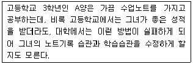
- 유전적 요인과 특별한 능력
- 환경조건과 사건
- 학습경험
- 과제접근기술
(정답률: 72%)
36. Cattell이 주장한 결정성 지능(crystallized intelligence)에 대한 설명으로 옳은 것은?
- 선천적인 지능이다.
- 뇌손상이나 정상적인 노령화에 따라 감소한다.
- 14세까지는 지속적으로 발달되다가 22세 이후 급격히 감소된다.
- 개인의 문화적 · 교육적 경험에 따라 영향을 받으며 환경에 따라 40세 까지 혹은 그 이후에도 발전 가능한 지능이다.
(정답률: 72%)
37. 다음 중 성격 5요인검사(big-5)의 하위요인에 포함되지 않는 것은?
- 성실성(conscientiousness)
- 강인성(hardiness)
- 외향성(extraversion)
- 개방성(openness)
(정답률: 75%)
38. Locke가 주장했던 “자신의 직무나 직무경험에 대한 평가로부터 비롯되는 유쾌하거나 정적인 감정상태”를 무엇이라고 하는가?
- 직무만족
- 직업적응
- 작업동기
- 직업수행
(정답률: 81%)
39. 교과과정을 개발하는데 활용되며, 교육훈련을 목적으로 교육목표와 교육내용을 비교적 단시간 내에 추출하는데 효과적인 직무분석 방법은?
- 데이컴법
- 비교확인법
- 관찰법
- 체험법
(정답률: 75%)
40. 다음 중 적성검사의 특징이 아닌 것은?
- 개인의 기본적인 적성수준을 알려준다.
- 원하는 취업분야의 적성을 키우는데 도움을 준다.
- 각 적성에 부합한 직장 분야 및 종류를 시사해준다.
- 대학의 학과나 계열선택에 도움이 될 각자의 적성수준을 알려준다.
(정답률: 49%)
3과목: 직업정보론
41. 직업정보 분석에 관한 설명으로 틀린 것은?
- 직업정보는 직업전문가에 의해 분석되어야 한다.
- 수집된 정보에 대하여는 목적에 맞도록 몇 번이고 분석하여 가장 최신의 객관적이며 정확한 자료를 선정한다.
- 동일한 정보라 할지라도 다각적인 분석을 시도하여 해석을 풍부히 한다.
- 직업정보원과 제공원에 관한 정보는 일반적으로 생략한다.
(정답률: 76%)
42. 고용보험제도에 대한 설명으로 틀린 것은?(관련 규정 개정전 문제로 여기서는 기존 정답인 3번을 누르면 정답 처리됩니다. 자세한 내용은 해설을 참고하세요.)
- 고용보험은 전통적 의미의 실험보험과 고용안정사업 및 직업능력개발사업 등의 적극적 노동시장정책을 연계 · 통합한 사회보장보험이다.
- 당연적용사업은 사업이 개시되거나 적용요건을 충족하게 되었을 때 사업주 또는 근로자의 의사와 관계없이 자동적으로 보험관계가 성립된다.
- 개산보험료는 당해 연도가 지나고 보통 그 다음해의 3월 31일까지 신고하는 보험료이다.
- 근로자가 부담하는 고용보험료에 대하여는 사업주가 임금지급시 원천공제한다.
(정답률: 71%)
43. 한국표준직업분류(2007)의 대분류 9에 해당되는 것은?
- 사무 종사자
- 단순노무 종사자
- 서비스 종사자
- 기능원 및 관련 기능 종사자
(정답률: 71%)
44. 한국직업사전(2011)의 부가직업정보에서 작업강도에 대한 설명으로 틀린 것은?
- 아주 가벼운 작업 - 최고 4kg의 물건을 들어올리고, 때때로 장부, 대장, 소도구 등을 들어 올리거나 운반한다.
- 가벼운 작업 - 최고 8kg의 물건을 들어올리고, 4kg정도의 물건을 빈번히 들어 올리거나 운반한다.
- 힘든 작업 - 최고 20kg의 물건을 들어올리고 10kg정도의 물건을 빈번히 들어 올리거나 운반한다.
- 아주 힘든 작업 - 40kg 이상의 물건을 들어올리고 20kg 이상의 물건을 빈번히 들어올리거나 운반한다.
(정답률: 68%)
45. 한국고용정보원에서 발행하는 워크넷 구인 · 구직 및 취업 동향에 수록된 용어해설에 관한 설명으로 틀린 것은?
- 신규구직자수 : 해당 월에 워크넷에 등록된 구직자 수
- 제시임금 : 구직자가 구인자에게 제시하는 임금
- 시간제 : 그 사업장에서 근무하는 통산상의 근로자보다 짧은 시간을 근로하게 하는 고용
- 구인배율 : 신규구인인원÷ 신규구직자수
(정답률: 59%)
46. 2012년에 새로 신설되는 국가기술자격종목이 아닌 것은?
- 대기환경기사
- 기상감정기사
- 광학기기산업기사
- 컨테이너크레인운전기능사
(정답률: 27%)
47. 민간직업정보의 일반적인 특징과 가장 거리가 먼 것은?
- 한시적으로 정보가 수집 및 가공되어 제공된다.
- 객관적인 기준을 가지고 전체 직업에 관한 일반적인 정보를 제공한다.
- 직업정보 제공자의 특정한 목적에 따라 직업을 분류한다.
- 통상적으로 직업정보를 유료로 제공한다.
(정답률: 77%)
48. 한국표준산업분류(2008)에 관한 설명으로 틀린 것은?
- 산업활동에 의한 통계자료의 수집, 제표, 분석 등을 위해서 활동카테고리를 제공한다.
- 일반 행정 및 산업정책관련 법령에서 적용대상 산업영역을 한정하는 기준으로 준용된다.
- 취업알선을 위한 구인 · 구직안내 기준으로 사용된다.
- 산업통계 자료의 정확성, 비교성을 위하여 모든 통계작성기관이 의무적으로 사용해야 한다.
(정답률: 55%)
49. 2012년 통합되는 국가기술자격의 종목명 변화로 틀린 것은?
- (사출금형기능사, 프레스금형기능사) → 금형기능사
- (자동차정비기사, 자동차검사기사) → 자동차검사기사
- (수산제조산업기사, 식품산업기사) → 식품산업기사
- (전기철도기능사, 청도신호기능사) → 철도전기신호기능사
(정답률: 44%)
50. 한국표준산업분류(2008)의 단일 장소에서 이루어지는 단일 산업활동의 통계단위는?
- 기업집단
- 사업체단위
- 활동유형단위
- 지역단위
(정답률: 67%)
51. 한국고용정보원에서 제공하는 “직업선택을 위한 학과정보”에서 계열과 학과명이 잘못 연결된 것은?
- 인문계열 – 문헌정보학과
- 사회계열 - 가정관리학과
- 자연계열 – 화학과
- 공학계열 - 건축학과
(정답률: 49%)
52. 워크넷에서 제공하는 채용정보 중 기업형태별 검색에 해당하지 않는 것은?(개정전 문제입니다. 정답은 4번 이었습니다. 자세한 내용은 해설을 참고하세요.)
- 우수중소기업
- 공기업/공공기관
- 외국계기업
- 금융권기업
(정답률: 74%)
53. 다음은 국가기술자격 검정기준 중 어떤 등급에 관한 것인가?
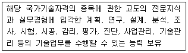
- 기술사
- 기사
- 산업기사
- 기능장
(정답률: 66%)
54. 다음은 한국표준직업분류(2007)의 직능수준 중 어디에 해당하는 설명인가?
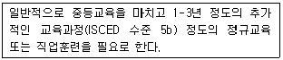
- 제1직능 수준
- 제2직능 수준
- 제3직능 수준
- 제4직능 수준
(정답률: 56%)
55. 내일배움카드제의 지원내용에 대한 설명으로 틀린 것은?(관련 규정 개정전 문제로 정답이 없습니다. 기존 정답은 1번이었습니다. 여기서는 1번을 누르면 정답 처리 됩니다.)
- 1인당 계좌한도는 200만원, 유효기간은 발급일로부터 3년이다.
- 훈련비의 80%는 정부가 지원하고 20%는 훈련생 본인이 부담하며, 지원한도를 초과하는 금액도 훈련생이 부담한다.
- 공급과잉훈련분야의 경우에는 훈련비의 60%는 정부가 지원하고 40%는 훈련생 본인이 부담한다.
- 교통비는 모든 훈련과정, 식비는 1일 5시간 이상 훈련과정을 수강하는 경우 출석한 일수만큼 지급한다.
(정답률: 76%)
56. 한국직업정보시스템에서 제공하는 학과정보가 아닌 것은?
- 주요교과목
- 개설대학
- 진출직업
- 졸업자 평균연봉
(정답률: 70%)
57. 한국직업사전에 수록되어 있는 정보 중 유사명칭에 대한 설명으로 틀린 것은?
- 본 직업을 명칭만 다르게 부르는 것이다.
- 직업 수 집계에서 제외된다.
- 유사명칭은 한국직업사전의 부가직업정보에 해당한다.
- 본 직업을 직무의 범위, 대상 등에 따라 나눈 것이다.
(정답률: 54%)
58. 한국직업전망(2011)에 대한 설명으로 틀린 것은?(관련 규정 개정전 문제로 정답이 없습니다. 기존 정답은 3번이었습니다. 여기서는 3번을 누르면 정답 처리 됩니다.)
- 직업전망은 향후 5년간 해당직업의 고용전망을 그 이유를 들어 기술한 것으로 5가지 수준으로 구분하여 제시하였다.
- 수록직업은 한국고용직업분류(KECO)에 근거하였다.
- 해당 직업의 종사자 수, 연령분포, 학력수준, 전공분포는 통계청의 경제활동인구조사의 통계를 주로 활용하였다.
- 해당 직업을 갖기 위해 필요한 교육 및 훈련, 관련 자격, 입직경로 및 진출분야 등을 수록하였다.
(정답률: 75%)
59. 한국직업사전(2011)에서 제공하는 정보 중 직무기능(DPT)은 해당직무를 수행하는 작업자가 자료, 사람, 사물과 맺는 관계를 나타내는 것이다. 다음 표의 ( )안에 들어갈 알맞은 것은?
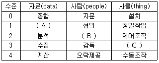
- A : 조정, B : 교육, C : 조작운전
- A : 기록, B : 설득, C : 유지
- A : 비교, B : 말하기ㆍ신호, C : 투입ㆍ인출
- A : 관련없음, B : 서비스 제공, C : 단순작업
(정답률: 70%)
60. 직업정보시스템에서 제공하는 직업정보에서 “나에게 적합한 직업”을 찾는 방법이 아닌 것은?
- 흥미로 찾기
- 지식으로 찾기
- 근무지역으로 찾기
- 업무수행능력으로 찾기
(정답률: 55%)
4과목: 노동시장론
61. 다른 조건이 일정한 상태에서 비노동소득이 발생할 경우의 노동공급에 과한 설명으로 옳은 것은?
- 소득효과와 대체효과의 상대적 크기에 따라 노동공급이 늘 수도 있고, 줄 수도 있다.
- 소득효과보다 대체효과가 더 크기 때문에 노동공급이 증가한다.
- 대체효과만 있기 때문에 노동공급이 증가한다.
- 소득효과만 있기 때문에 노동공급이 감소한다.
(정답률: 49%)
62. 유보임금(reservation wage) 에 관한 설명으로 옳은 것은?
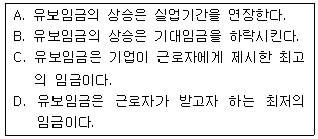
- A, C
- B, C
- B, D
- A, D
(정답률: 63%)
63. 개별기업수준에서 노동에 대한 수요곡선을 이동시키는 요인이 아닌 것은?
- 기술의 변화
- 임금의 변화
- 최종생산물 가격의 변화
- 노동 이외 타 생산요소의 가격변화
(정답률: 72%)
64. 노동에 의해 생산된 상품의 가격이 상승하면 일어나는 현상으로 옳은 것은?(단, 상품시장과 노동시장은 완전경쟁시장구조를 갖고 있고, 기업은 이윤 극대화를 추구한다고 가정)
- 노동공급의 증가
- 노동수요의 증가
- 노동의 한계생산량의 증가
- 노동의 한계생산량의 감소
(정답률: 42%)
65. 다음 중 수요부족실업에 해당되는 것은?
- 마찰적 실업
- 구조적 실업
- 계절적 실업
- 경기적 실업
(정답률: 60%)
66. 단체교섭 형태 중 만일 어떤 방직회사 대표가 연합단체인 섬유노련과 임금과 노동조건에 대해 교섭한다면 이러한 교섭한다면 이러한 교섭형태는?
- 집단교섭
- 통일교섭
- 대각선교섭
- 기업별교섭
(정답률: 68%)
67. 생산성 임금제를 따를 때 물가상승률이 3%이고, 실질 생산성 증가율이 5%라고 하면 명목임금은 얼마나 인상되어야 하는가?
- 2%
- 4%
- 8%
- 15%
(정답률: 67%)
68. 다음 중 여성의 경제활동 참가 증가요인이 아닌 것은?
- 시장임금의 상승
- 보상요구임금의 상승
- 가계생산 기술의 향상
- 파트타임 고용시장의 발달
(정답률: 58%)
69. 직업별 노동조합(craft union)에 관한 설명으로 틀린 것은?
- 동일직업의 노동자들이 소속 기업이나 공장에 관계없이 가입한 횡적 조직이었다.
- 저임금의 미숙련노동자, 여성, 연속노동자들도 조합에 가입할 수 있었다.
- 조합원 간의 연대를 강화하기 위해 공제활동에 의한 조합원간의 상호부조에 주력했다.
- 산업혁명 초기 숙련노동자가 노동시장을 독점하기 위한 조직으로 결성하였다.
(정답률: 69%)
70. 다음 중 신고전학파가 주장하는 노조의 사회적 비용이 아닌 것은?
- 고용저하와 비노조와의 임금격차에 따른 배분적 비효율
- 경직적 인사제도에 의한 기술적 비효율
- 파업으로 인한 생산중단에 따른 생산적 비효율
- 작업방해에 의한 구조적 비효율
(정답률: 57%)
71. A국의 취업자가 200만명, 실업자가 10만명, 비경제활동인구가 100만명이라고 할 때, A국의 경제활동참가율은?
- 약66.7%
- 약67.7%
- 약69.2%
- 약70.4%
(정답률: 67%)
72. 다음 중 실업률과 물가상승률간 역의 상충관계를 나타내는 곡선은?
- 래퍼곡선
- 필립스곡선
- 로렌즈곡선
- 테일러곡선
(정답률: 74%)
73. 단체교섭에서 사용자의 교섭력에 관한 설명으로 틀린 것은?
- 기업의 재정능력이 좋으면 사용자의 교섭력이 높아진다.
- 사용자 교섭력의 원천 중 하나는 직장폐쇄(lockout)를 할 수 있는 권리이다.
- 사용자는 쟁의행위기간 중 그 쟁의행위로 중단된 업무를 원칙적으로 도급 또는 하도급 줄 수 있다.
- 비조합원이 조합원의 일을 대신할 수 있는 여지가 크다면, 그만큼 사용자의 교섭력이 높아진다.
(정답률: 65%)
74. 다음 중 노동조합의 성장률을 저하시키는 요인과 가장 거리가 먼 것은?
- 여성 근로자 비율의 증가
- 국제경쟁의 완화
- 서비스업의 비중 증대
- 근로자 취향이 개인중심적으로 변화
(정답률: 49%)
75. 기술 발전과 노동이 보완재라고 할 때 기술발전이 노동수요에 미치는 효과로 옳은 것은? (단, 노동공급곡선은 우상향함)
- 시장균형 고용수준 상승, 균형임금 상승
- 시장균형 고용수준 상승, 균형임금 하락
- 시장균형 고용수준 하락, 균형임금 상승
- 시장균형 고용수준 하락, 균형임금 하락
(정답률: 43%)
76. 직무급을 도입하기 위한 전제조건과 가장 거리가 먼 것은?
- 직무의 표준화와 전문화가 이루어져야 한다.
- 노동조합의 동의가 있어야 한다.
- 직무중심의 채용과 평가제도가 확립되어야 한다.
- 직종 간 고용의 유동성이 있어야 한다.
(정답률: 66%)
77. 임금체계의 유형 중 연공급의 단점에 대한 설명으로 틀린 것은?
- 위계질서의 확립이 어렵다
- 동기부여효과가 미약하다
- 비합리적인 인건비 지출을 하게 된다
- 능력 · 업무와의 연계성이 미약하다.
(정답률: 70%)
78. 이윤극대화를 추구하는 기업이 이직률을 낮추기 위해 효율성임금(efficiency wage)을 지불할 경우 발생할 수 있는 실업은?
- 마찰적 실업
- 구조적 실업
- 경기적 실업
- 지역적 실업
(정답률: 59%)
79. 노동수요특성별 입금격차의 원인 중 경쟁적 요인이 아닌 것은?
- 인적자본량
- 보상적 임금격차
- 비효율적 연공급 제도의 영향
- 기업의 합리적 선택으로서 효율성 임금정책
(정답률: 44%)
80. 기혼여성의 경제활동참가율은 70%이고 실업률은 20%일 때, 기혼여성의 고용률은?
- 50%
- 56%
- 80%
- 86%
(정답률: 60%)
5과목: 노동관계법규
81. 근로기준밥상 예고해고가 적용되는 근로자는?(관련 규정 개정전 문제로 여기서는 기존 정답인 1번을 누르면 정답 처리됩니다. 자세한 내용은 해설을 참고하세요.)
- 일용근로자로서 3개월 이상을 계속 근무한 자
- 2개월 이내의 기간을 정하여 사용된 자
- 월급근로자로서 6개월이 되지 못한 자
- 수습 사용 중인 근로자
(정답률: 68%)
82. 고용보험법상 실업급여에 포함되지 않는 것은?
- 생계비
- 이주비
- 구직급여
- 조기 재취업 수당
(정답률: 57%)
83. 고용정책 기본법상 실업대책사업에 해당하지 않는 것은?
- 실업자 가족의 의료비 지원
- 고용촉진과 관련된 사업을 하는 자에 대한 대부(貸付)
- 실업자의 주택구입자금 지원
- 실업자에 대한 공공근로사업
(정답률: 69%)
84. 다음 ( )안에 들어갈 가장 알맞은 것은?(관련 규정 개정전 문제로 여기서는 기존 정답인 4번을 누르면 정답 처리됩니다. 자세한 내용은 해설을 참고하세요.)
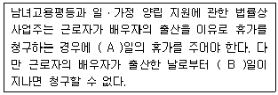
- A - 1, B – 15
- A - 1, B – 30
- A - 3, B – 15
- A - 3, B - 30
(정답률: 71%)
85. 고용상 연령차별금지 및 고령자고용촉진에 관한 법률상 중견전문인력 고용지원센터에 관한 설명으로 틀린 것은?
- 중견전문인력 고용지원센터는 「직업안정법」에 따라 무료직업소개사업을 하는 비영리법인 또는 공익단체로서 필요한 전문인력과 시설을 갖춘 단체 중에서 지정한다.
- 고용노동부장관은 중견전문인력 고용지원센터에 대하여 직업안정 업무를 하는 행정기관이 수집한 구인 · 구직 정보, 지역 내의 노동력 수급상황, 그 밖에 필요한 자료를 제공할 수 있다.
- 고용노동부장관은 중견전문인력 고용지원센터에 대하여 예산의 범위에서 소요 경비의 일부를 지원해야 한다.
- 중견전문인력 고용지원센터는 중견전문인력의 중소기업에 대한 경영자문 및 자원봉사활동 등의 지원사업을 한다.
(정답률: 55%)
86. 직업안정법상 사업을 하려는 경우 고용노동부장관에게 신고해야 하는 것은?(문제 오류로 가답안 발표시 1번으로 발표되었지만 모두 정답 처리 되었습니다. 여기서는 1번을 누르면 정답 처리 됩니다.)
- 무료직업소개사업
- 국내 유료직업소개사업
- 국외 유료직업소개사업
- 근로자공급사업
(정답률: 72%)
87. 다음 ( )에 들어갈 알맞은 것은?
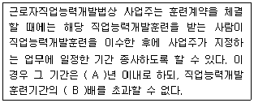
- A : 5, B : 5
- A : 3, B : 3
- A : 5, B : 3
- A : 3, B : 5
(정답률: 72%)
88. 근로기준법상 퇴직금의 소멸시효는?
- 2년
- 3년
- 5년
- 10년
(정답률: 74%)
89. 근로자직업능력 개발법상 직업능력개발훈련교사에 관한 설명으로 틀린 것은?
- 직업능력개발훈련교사의 자격증이 있는 사람만이 직업능력개발훈련을 위하여 훈련생을 가르칠 수 있다.
- 금고 이상의 형의 집행유예를 선고받고 그 유예기간 중에 있는 사람은 직업능력개발훈련교사가 될 수 없다.
- 직업능력개발훈련교사의 자격증을 빌려 준 경우에는 그 자격을 취소할 수 있다.
- 지방자치단체도 직업능력개발훈련교사의 양성을 위한 훈련과정을 설치 · 운영할 수 있다.
(정답률: 61%)
90. 남녀고용평등과 일 · 가정 양립 지원에 관한 법률상 출산전후휴가에 대한 지원에 관한 설명으로 틀린 것은?
- 국가는 산전후휴가를 사용한 근로자 중 일정한 요건에 해당하는 자에게 그 휴가기간에 대하여 평균임금에 상당하는 출산전후휴가급여를 지급하여야 한다.
- 출산전후휴가급여 등을 지급하기 위하여 필요한 비용은 재정이나 「사회보장기본법」에 따른 사회보험에서 분담할 수 있다.
- 여성 근로자가 출산전후휴가급여를 받으려는 경우 사업주는 관계 서류의 작성 ㆍ 확인 등 모든 절차에 적극 협력하여야 한다.
- 출산전후휴가급여의 지급요건 및 절차 등에 관하여 필요한 사항은 따로 법률로 정한다.
(정답률: 61%)
91. 고용정책 기본법상 근로자의 고용촉진 및 사업주의 인력확보 지원시책이 아닌 것은?
- 구직자와 구인자에 대한 지원
- 학생 등에 대한 직업지도
- 취업취약계층의 고용촉진 지원
- 업종별 ㆍ 지역별 고용조정의 지원
(정답률: 43%)
92. 근로기준법상 재해보상에 관한 설명으로 틀린 것은?
- 사용자는 요양 중에 있는 근로자에게 그 근로자의 요양 중 평균임금의 100분의 60의 휴업보상을 하여야 한다.
- 근로자가 업무상 사망한 경우에는 사용자는 근로자가 사망한 후 지체 없이 그 유족에게 평균임금 360일분의 유족보상을 하여야 한다.
- 근로자가 업무상 사망한 경우에는 사용자는 근로자가 사망한 후 지체 없이 평균임금 90일분의 장의비를 지급 하여야 한다.
- 요양보상을 받는 근로자가 요양을 시작한 지 2년이 지나도 부상 또는 질병이 완치되지 아니하는 경우에는 사용자는 그 근로자에게 평균임금 1,340일분의 일시보상을 하여 그 후의 이 법에 따른 모든 보상책임을 면할 수 있다.
(정답률: 61%)
93. 헌법상 근로자의 노동3권에 해당하지 않는 것은?
- 단결권
- 단체교섭권
- 단체행동권
- 이익균점권
(정답률: 78%)
94. 남녀고용평등과 일ㆍ가정 양립 지원에 관한 법률상 과태료를 부과하는 위반행위는?
- 직장 내 성희롱과 관련하여 피해를 입은 근로자 또는 성희롱 발생을 주장하는 근로자에게 해고나 그 밖의 불리한 조치를 하는 경우
- 직장 내 성희롱 발생이 확인되었는데도 지체 없이 행위자에게 징계나 그 밖에 이에 준하는 조치를 하지 아니한 경우
- 동일한 사업 내의 동일 가치의 노동에 대하여 동일한 임금을 지급하지 아니한 경우
- 육아기 근로시간 단축을 이유로 해당 근로자에 대하여 해고나 그 밖의 불리한 처우를 한 경우
(정답률: 38%)
95. 근로기준법상 근로계약에 관한 설명으로 틀린 것은?
- 단시간근로자의 근로조건은 그 사업장의 같은 종류의 업무에 종사하는 통상 근로자의 근로시간을 기준으로 산정한 비율에 따라 결정되어야 한다.
- 사용자는 근로계약 불이행에 대한 위약금 또는 손해배상액을 예정하는 계약을 체결하여야 한다.
- 사용자는 전차금(前借金)이나 그 밖에 근로할 것을 조건으로 하는 전대(前貸)채권과 임금을 상계하지 못한다.
- 사용자는 근로계약에 덧붙여 강제 저축 또는 저축금의 관리를 규정하는 계약을 체결하지 못한다.
(정답률: 65%)
96. 고용보험법상 이직한 피보험자의 구직급여 수급요건으로 틀린 것은?
- 이직일 이전 18개월간 피보험 단위기간이 통산하여 150일 이상일 것
- 근로의 의사와 능력이 있음에도 불구하고 취업하지 못한 상태에 있을 것
- 재취업을 위한 노력을 적극적으로 할 것
- 일용근로자는 수급자격 인정신청일 이전 1개월 동안의 근로일수가 10일 미만일 것
(정답률: 66%)
97. 근로자직업능력 개발법규상 저소득층이 아닌 근로자의 직업능력개발계좌 훈련비용의 지원한도는?(관련 규정 개정전 문제로 여기서는 기존 정답인 1번을 누르면 정답 처리됩니다. 자세한 내용은 해설을 참고하세요.)
- 근로자 1명당 1년에 한하여 200만원
- 근로자 1명당 1년에 한하여 300만원
- 근로자 1명당 2년에 한하여 200만원
- 근로자 1명당 2년에 한하여 300만원
(정답률: 55%)
98. 고용상 연령차별금지 및 고령자고용촉진에 관한 법률에 관한 설명으로 옳은 것은?
- 근로자는 노동조합 및 노동관계조정법상의 근로자를 말한다.
- 제조업은 그 사업장의 상시 근로자수의 100분의 3을 고령자로 고용하여야 한다.
- 고령자는 50세 이상인 사람으로 한다.
- 상시 300명 이상의 근로자를 사용하는 사업주는 기준고용률 이상의 고령자를 고용하도록 노력하여야 한다.
(정답률: 70%)
99. 고용상 연령차별금지 및 고령자고용촉진에 관한 법률상 연령차별에 관한 설명으로 옳은 것은?
- 직무의 성격상 특정 연령 기준이 불가피하게 요구되는 경우라도 연령에 따라 차등하는 경우 연령차별에 해당한다.
- 적법한 근로계약, 취업규칙, 단체협약에서는 정년을 설정할 수 없다.
- 근속기간의 차이로 인한 임금, 복리후생에서의 차등은 합리적이라 하더라도 연령차별에 해당된다.
- 관계법률에 따른 특징 연령집단의 고용유지 · 촉진을 위한 지원 조치를 하는 경우는 연령차별에 해당하지 않는다.
(정답률: 63%)
100. 직업안정법에서 사용하는 용어의 정의로 틀린 것은?
- 유료직업소개사업이란 무료직업소개사업이 아닌 직업소개사업을 말한다.
- 직업안정기관이라 직업소개, 직업지도 등 직업안정업무를 수행하는 지방고용노동행정기관을 말한다.
- 무료직업소개사업이란 수수료, 회비 또는 그 밖의 어떠한 금품도 받지 아니하고 하는 직업소개사업을 말한다.
- 직업소개란 구인 또는 구직의 신청을 받아 구인자와 구직자간에 고용계약의 성립을 결정하는 것을 말한다.
(정답률: 53%)
- 교류분석적 상담: 인간관계에서 발생하는 문제를 해결하기 위해 상호작용을 중심으로 한 상담
- 개인주의 상담: 개인의 내면적인 감정과 생각을 이해하고, 그것을 받아들이며, 자신의 삶을 스스로 결정할 수 있는 능력을 키우는 상담
- 실존주의 상담: 개인이 직면한 현실적인 문제를 해결하고, 자아를 발견하며, 자신의 인생을 살아가는 데 필요한 자기 인식과 자기 수용 능력을 키우는 상담
- 형태주의 상담: 개인의 행동양식과 생각 패턴을 분석하여, 그것을 수정하고 개선하는 상담